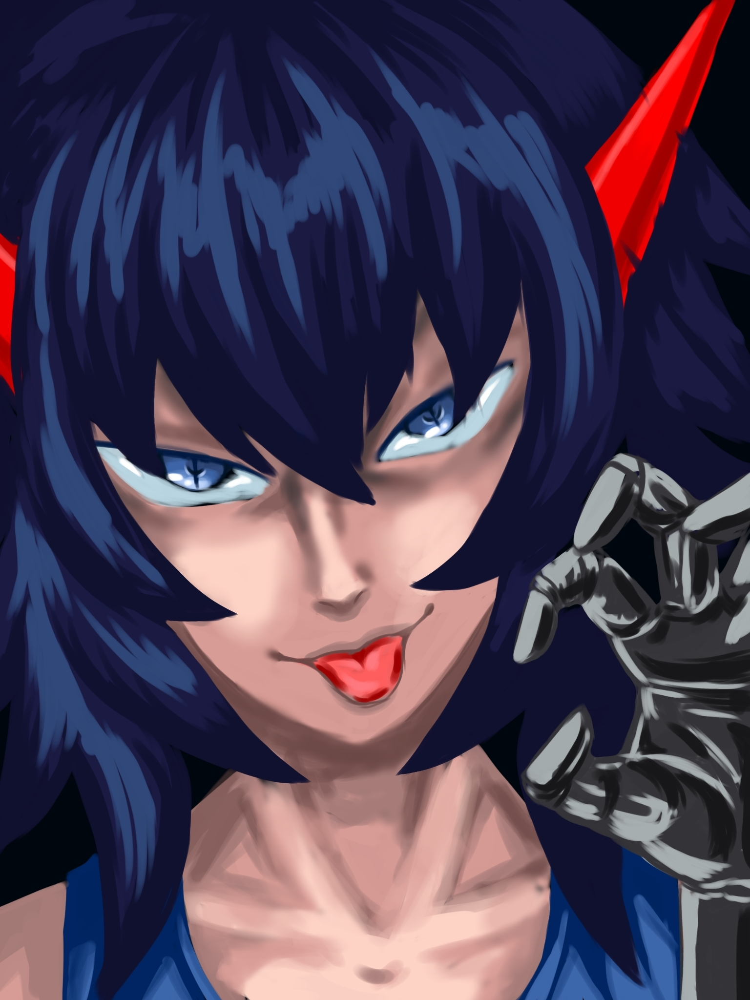

.png) Phantom protocol
Phantom protocol
Привет! Добро пожаловать на сайт новеллы Phantom protocol
Это визуальная новелла о сложности бытия лица с ограниченными возможностями на грани психического расстройства, главная задача - выбор пути серез 12 возможных концовок, через каждое ваше слово, через молчание, которое тяжелее фраз, вы будете вести его к свету. Каждый ваш выбор меняет его. Или ломает окончательно. Отвечать не так, как «правильно», а так, как честно.
Скачать игру
Т/И
О персонаже
Т/И – игрок, являющийся одним из главных героев новеллы Фантом протокола. Он является действующим лицом игры.
Внешний вид
Т/И – желтый маникен для краш-тестов сделанный из материалов, максимально имитирующий человеческое тело. Манекен сделан под стандарты среднестатистического человека – рост не превышает 180 см, а вес не больше 80 кг.
Характер
Т/И довольно пытливый персонаж часто находящий проблемы себе. К тому же игрок всегда стремится помоч, но только кругу заверенных лиц. Как говорится если бы у него было лицо, то он бы всегда улыбался. Хотя при некоторых обстоятельствах он готов пойти на все, лишь бы выполнить представленую ему задачу. Так же характер игрока может меняться в зависимости от обстоятельств.
Участие в эксперементах
В лаборатории Т/И оказался случайно. После падения из чёрного нечто он ещё недолгое время бродил по коридорам лаборатории "Сектор Исход". Пока не наткнулся на Найна.
Найн
О персонаже
Найн – персонаж, являющийся одним из главных героев новеллы Фантом протокола. Является одним из эксперементов лаборатории "Сектор Исход" под номером 9. О родственниках ничего неизвестно, но ранее был знаком с одной девочкой.
Внешний вид
Найн – брюнет с отлитой синевой, у него голубые глаза и бледноватая кожа. На голове у него находится Радиосенсоры отвечающие за слух и настроение Найна ( зелёный – положительно, красный – отрицательно, серофиолетоый – страх, голубой – вдохновление). Он носит короткие серо-голубые шорты и серосинюю майку. Рук у него нет, вместо них находятся фиксаторы на сочленениях для подсоединения биотехнических манипуляторов. На данное время Найну 8-10 лет, рост у него примерно 127-133 см и весом не превышает 30 кг.
Характер
Найн является довольно позитивным человеком для сложившейся ему обстоятельствах. В трудных случаях старается держать себя в руках, кроме тех моментов когда считает, что выхода уже нет. К нему не часто приходит аппатия, которая может постепенно перерости в истерику. Так же он ненавидит когда Т/И говорит, что всё в порядке, хотя нихрена не в порядке. Зачастую такие выходки приводят к психопатии.
Участие в эксперементах
Найна насильно притащили в лабораторию "Сектор Исход". До попадания в этот ад он был сиротой, который ничего не помнит.
Неизвестный
О персонаже
Неизвестный – второстепенный персонаж новеллы Фантом протокола. Он является бесполой тёмной дымкой неизвестного происхождения. Его начало окутано множество тайн. Зачастую Неизвестного можно увидить левитируещего в потаённых углах темных комнат. А так же является только Т/И по неизвестным причинам.
Внешний вид
Неизвестный – черная дымка напоминающий человеческий силуэт со сверкающими лунными глазами в ночи. Из-за своей без телесной плоти может проходит сквозь предметы и вселятся в других по желанию. Хоть при вселении в другое тело он должен обладать полным контролем, но чаще всё зависит от вселяемого существа.
Характер
Неизвестный весьма рассудительное нечто. Несмотря на его внешность внутри скрывается весьма эмпатичная и отзывчивая личность. Привизавщийсь к какому нибудь существу будет до последнего его защищать.
Участие в эксперементах
Нечто не учавствовал в эксперементах, но любил иногда поглядывать на других из тени.


Интересные факты
- Автор новеллы Фантом протокола взял за идею сюжета для своей игры из снов.
- Создание новеллы заняли последние нервные клетки из банка.
- В игре нет точного определенного времени, существует лишь брешь в междумирье.
- Ранее планировалось сделать любовную линию с человеком из прошлого Девять и Найном.
- Полный Id объекта 9 – 0467459
- На стенах комнаты Найна можно заметить рисунки из прошлого, где можно увидеть силуэт Неизвестного.
- В игре существует 2 хорошие концовки, 1 из которых истиная и 10 смертельных.
- Самая длинная концовка – "Неоновый дом", которая также является секретной.
- Первый концепт арт Неизвестного выглядел совсем иначе.
- Хвост Скорпонока и органы появилист у Найна от давней знакомой.
- У Найна амнезия.